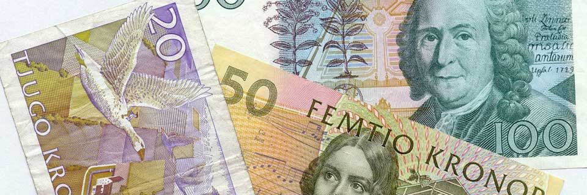
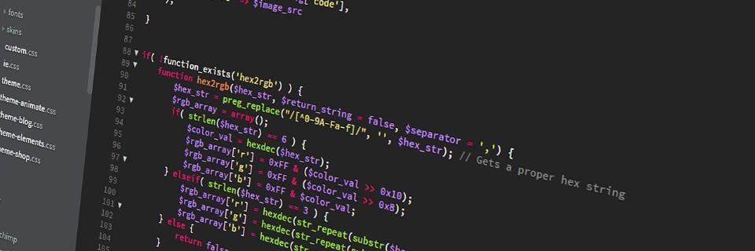
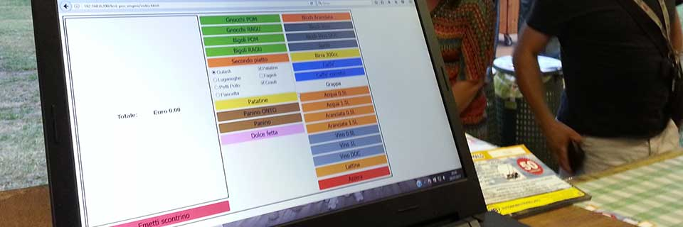
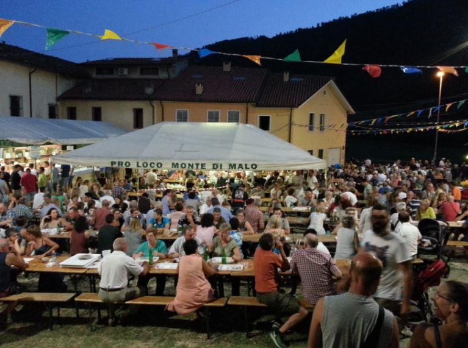
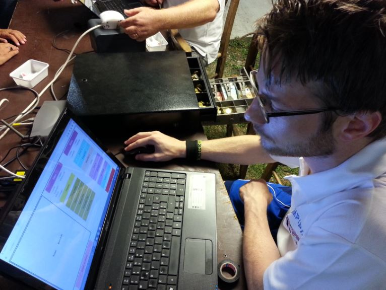
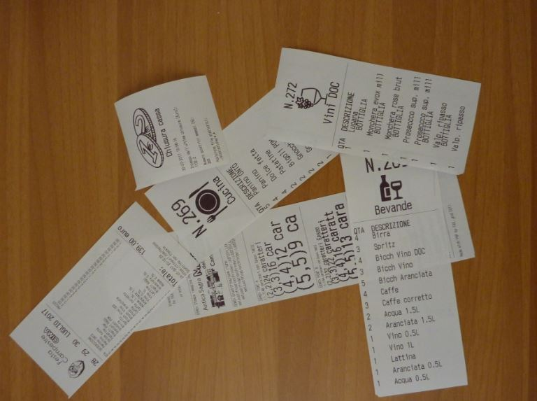
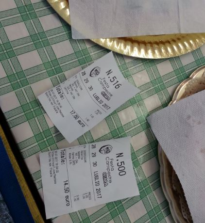

Info

festPOS e' un software registratore di cassa, progettato per essere utilizzato su computer o tablet tramite un semplice browser come Firefox o Chrome. Tra i punti di forza di questo programma, quello di poter stampare gli scontrini provenienti da piu' casse verso un'unica stampante, mantenendo il "numero d'ordine" coerente. In poche parole, i clienti saranno serviti nel giusto ordine, anche se hanno richiesto lo scontrino da casse diverse.
Immaginate di poter ricevere ordini da PC e tablet contemporaneamente e di stampare scontrini separati per bibite, cibo ed altre categorie da voi impostabili. Con festPOS e' possibile.
festPOS puo' essere utilizzato da un PC qualsiasi (con un browser recente), da MAC, da tablet o perche' no... da uno smartphone (si', ma in questo caso procurati un dito sufficientemente piccolo!).
Tecnologia
festPOS funziona su un piccolo server LAMP locale che puo' essere un Raspberry, un emulatore AMP che gira sotto Windows, o qualsiasi altro server che fornisca i servizi Apache (o equivalente) e PHP. E' completamente realizzato con PHP, HTML, CSS e JavaScript. NON servono database mySQL e neanche SQLite. La stampa viene inviata tramite comandi ESC/POS direttamente alla/alle stampanti collegate via Ethernet.
Da non dimenticare inoltre il contributo di Mike42 che ha realizzato la libreria PHP che permette la stampa via ESC/POS.
festPOS e' un software libero, rilasciato sotto licenza GPL. Per il suo funzionamento e' richiesta una conoscenza almeno basilare delle tecnologie sopra citate, senza la quale sarebbe di difficile configurazione e personalizzazione.
Download
Ti avviso che festPOS cambia molto velocemente... quindi la versione che stai per scaricare potrebbe non essere aggiornata.
Puoi scaricare festPOS ora, oppure puoi contattarmi.
Contribuisci

Sto cercando persone che possano aiutarmi allo sviluppo di questo programma.
In giro ci sono troppi programmi a pagamento, assai incompleti e fatti male (secondo me non meritano i soldi spesi); perche' non svilupparne uno di definitivo e free?
Contattami
festPOS e' un software sviluppato da TheFAX, a Monte di Malo.
Scrivi via instagram a wonderfax.
Gallery




